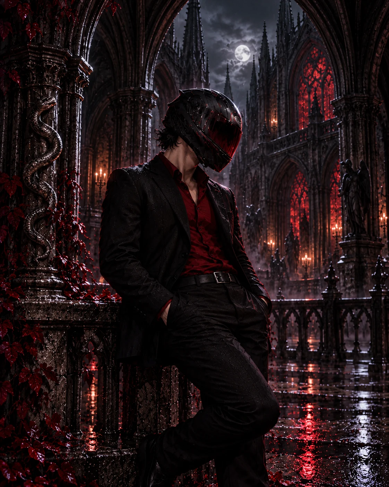
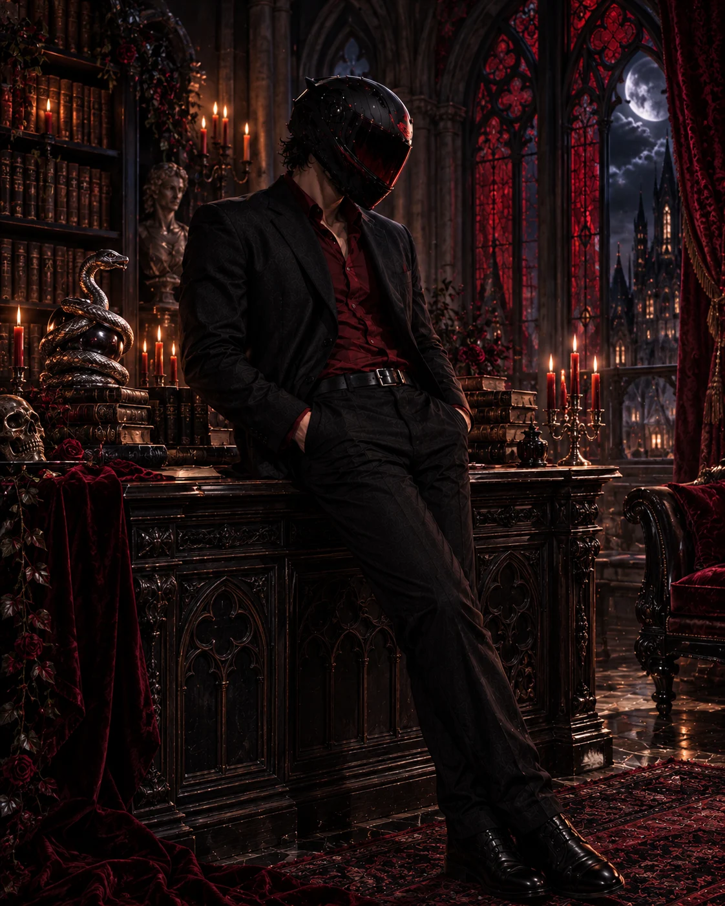
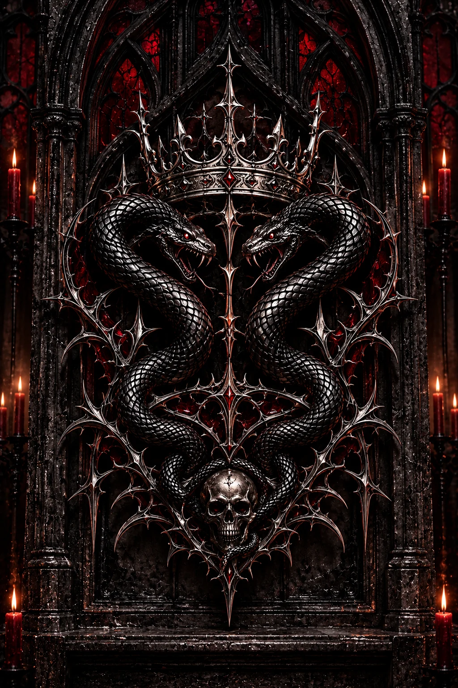

Nox_vyper · Voice actor
The night
has a voice.
Low lights. Long roads. Loud heart.
Dark romance, character work, and narration
for the hours nobody else is awake.
Every rose has thorns. So does he.
Beyond the mask
I. Behind the voice
Sharp edges.
Soft spots.
A voice with gravel in it
and a pulse under it.
Nox_vyper sounds like the last hour of a long drive — steady, a little dangerous, and honest in a way that catches you off guard.
He’s drawn to dark romance and the characters who don’t ask permission: the one who stays calm while everything burns, the one who warns you not to get obsessed and makes it impossible not to.
Loudest at 3am.
II. The craft
A little darkness.
A lot of character.
Characters, dark-romance audio,
and narration with a low-lit edge.
Delivery. Pacing. Tension.
01Dark romance
The tension
Character-led performance for stories with sharp edges. Dark-romance audio with delivery, pacing, and tension handled with intent.
Enquire about voice work02Character voices
The presence
A character with teeth. A voice with a pulse. Character-led voice acting that brings personality and presence to the story.
Tell us about your character03Narration & POV
The story
Late-night narration and POV audio for the hours nobody else is awake. A steady voice, a low-lit edge, and a story that stays with you.
Bring your storyReels and releases available through management.
Find him on TikTokIII. Respect the person
The boundaries.
The character is an invitation.
These lines are not.
- No flirting.01
- No pet names.02
- My DMs are closed.03
- Respect me and my mods.04
- My partner comes first.05
- Collaboration and business
inquiries accepted.06

Respect is part of the storyIV. Make the introduction
Let’s give it
a voice.
A character that needs teeth.
A story for the last hour of the night.
An idea you can’t shake.
Say the word.
Represented by Key ManagementsWork with Nox_vyper
Tell management a little about your project. Availability, scope, and rates are confirmed individually.
Email management directlyEvery rose has thorns.
So does he.